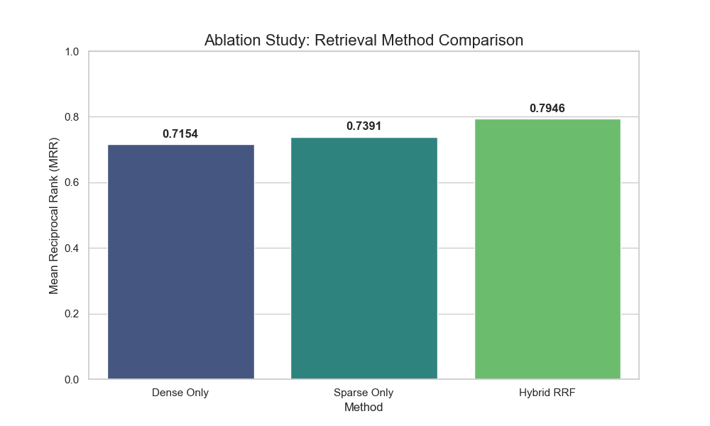

Total Questions Evaluated: 10
Comparison of retrieval methods (Dense vs. Sparse vs. Hybrid).
The following queries received the lowest scores and represent areas for improvement:
| question | ground_truth | generated_answer | mrr_score |
|---|---|---|---|
| What is the main theme of the book ? | The Good Terrorist | The theme of movement | 0.200000 |
| What was the most exciting review of the film ? | The New York Times called Karloff so splendid in the role that all one can say is 'he is the Monster '' . | Apocalypse | 0.333333 |
| what may be the reason the author would eat a omelette and cold ham on Christmas Day ? | a glass of wine | to enjoy a glass of wine . | 1.000000 |
| On which side was the original Custom House located ? | side | Wall Street | 1.000000 |
| Who was portrayed as the femme fatale in early stories ? | Black Widow | Black Widow | 1.000000 |